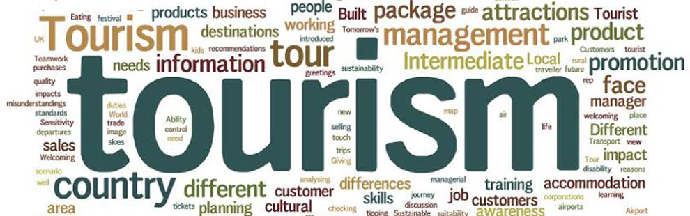

The College of Tourism and Hospitality Management of University of Batangas beams an outstanding reputation among many companies both in the Philippines and abroad due to the quality of the graduates it produces. It also holds the distinction of being the fastest growing hospitality school in Region IV, owing to a relevant and intensive curriculum that is supported by an extremely skilled faculty that are all National Certificate Holders of seven qualifications in various tourism sectors.
The college provides the student with a Hotel Management System in cooperation with Fast track IT Academy, a full service training facility that offers wide range of Information Technology Courses and Certification for Front Office, Food and Beverage Procedure, Rooms Division Management and Control and Events Management.
The College currently offers Bachelor of Science in International Hospitality Management (Dual Diploma Program), Bachelor of Science in Tourism Management, and Bachelor of Science in International Hospitality Management with specialization in Travel Management. All of these programs involve tie ups with several reputable companies in different tourism and hospitality-related industries that will serve as an actual training ground for students to experience hand-on learning.
The college produces an internationally competent graduate embedding the curriculum the courses of the Australian Skills Institute for Diploma in Leadership and Management. Thus, giving the students dual diploma when they graduated the four-year course BS in International Hospitality Management and Diploma in Leadership and Management BS in Tourism Management and Diploma in Leadership and Management.
The college envisions itself to be a premier skills-based school of Tourism and Hospitality Management providing academic excellence in the country.
CTM is committed to produce competent and employable graduates equipped with skills and attributes in line with ASEAN qualifications.
